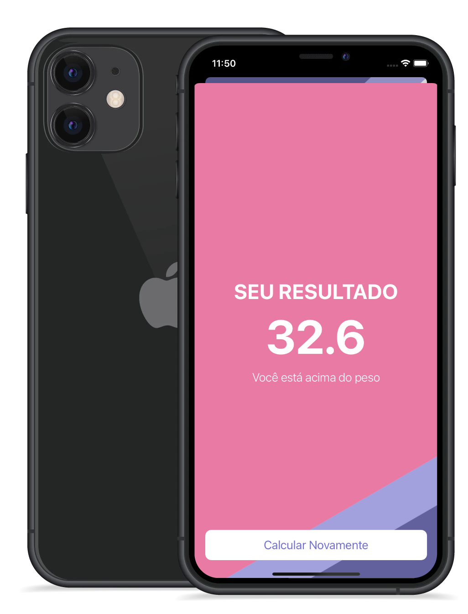
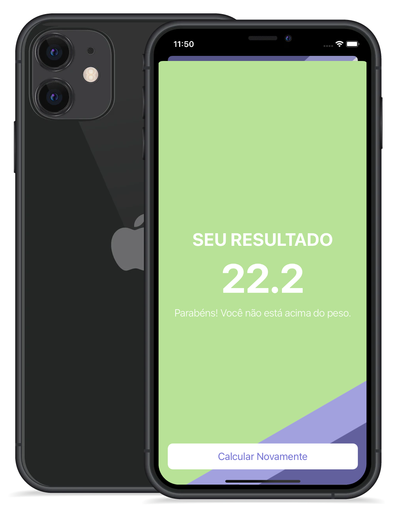
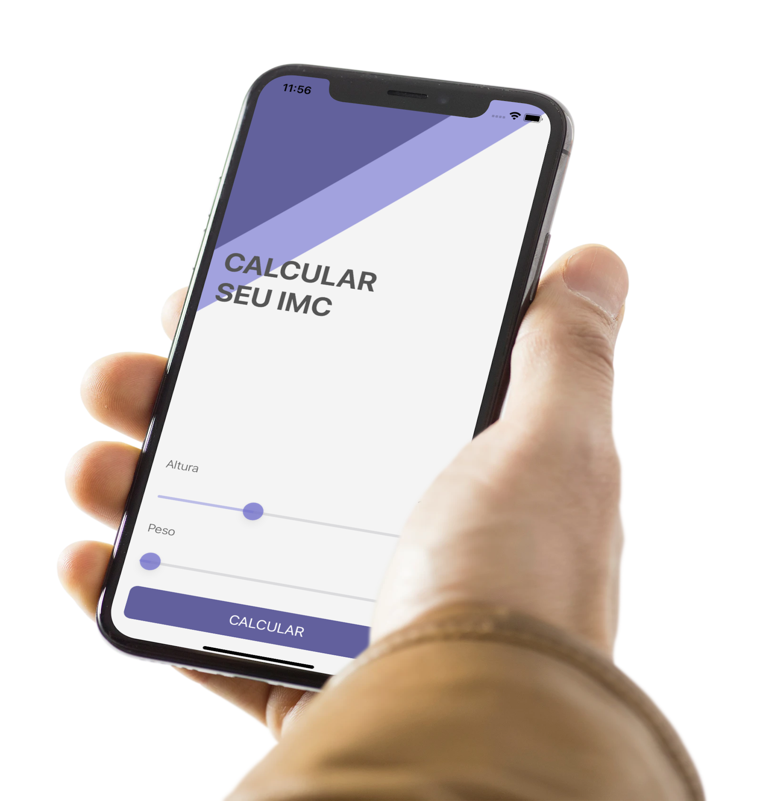
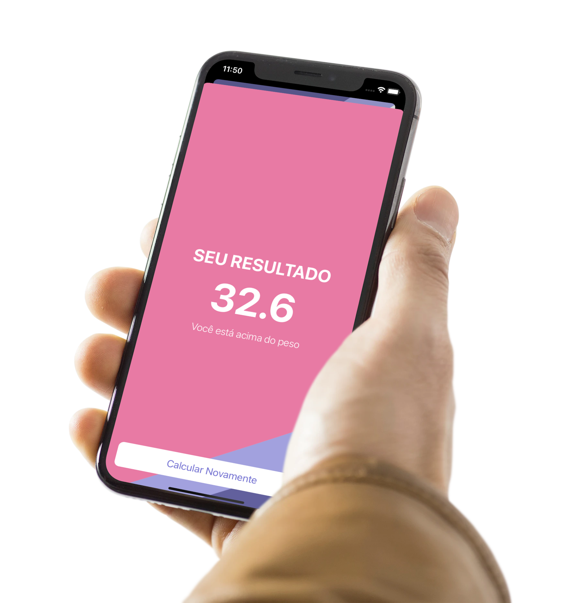
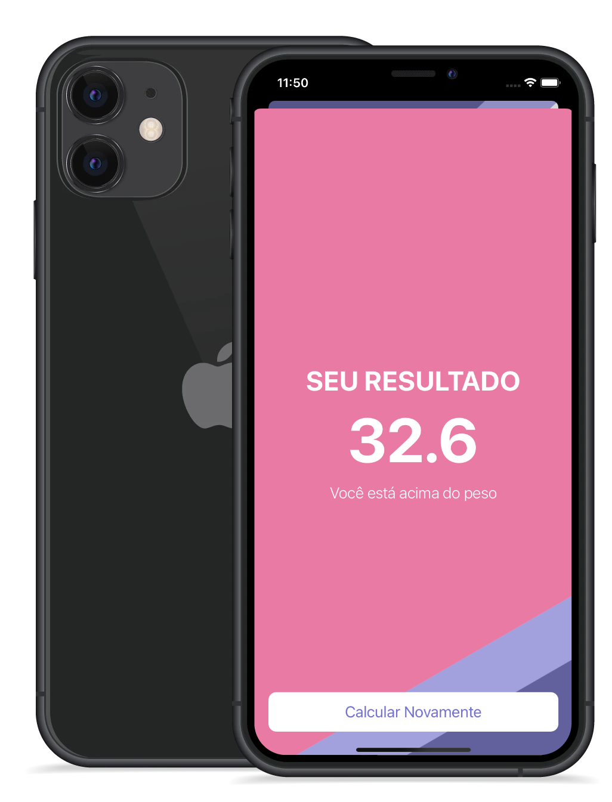
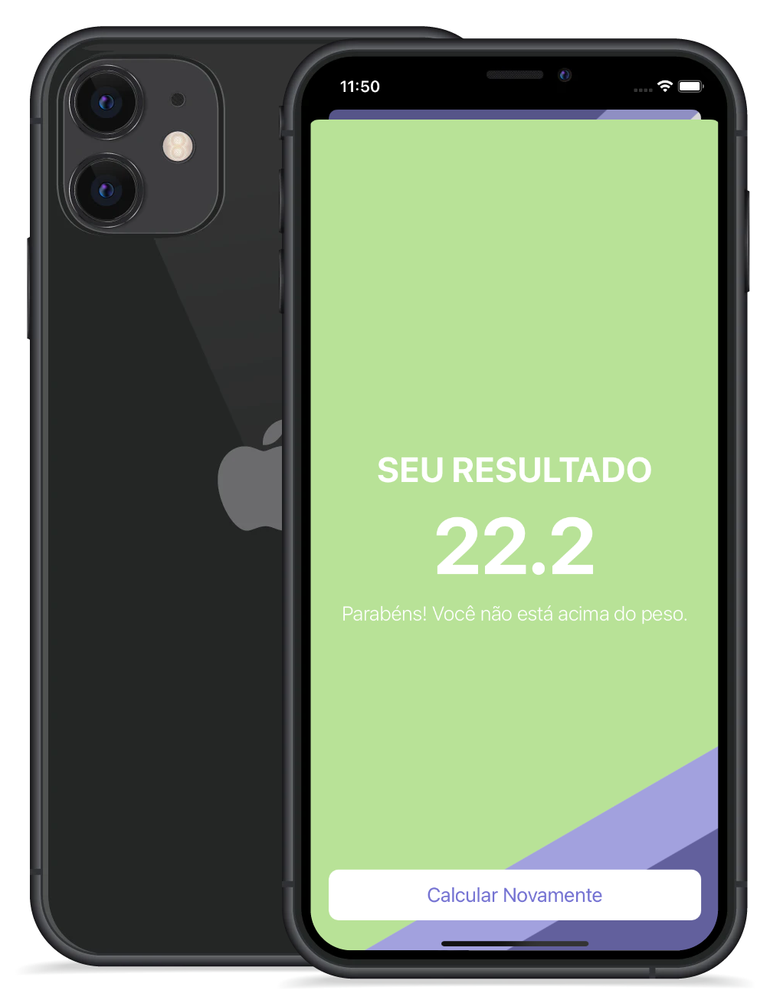
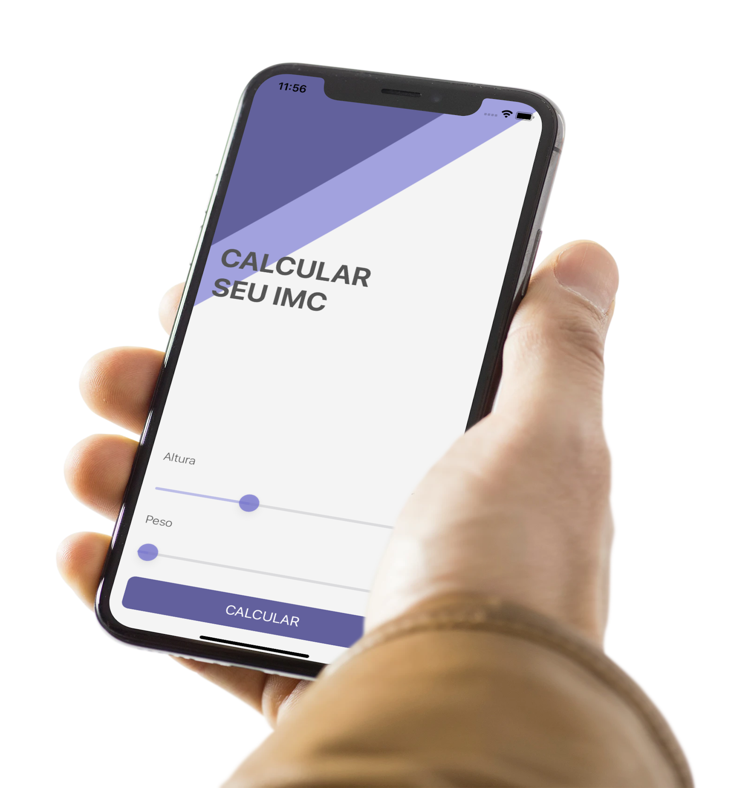
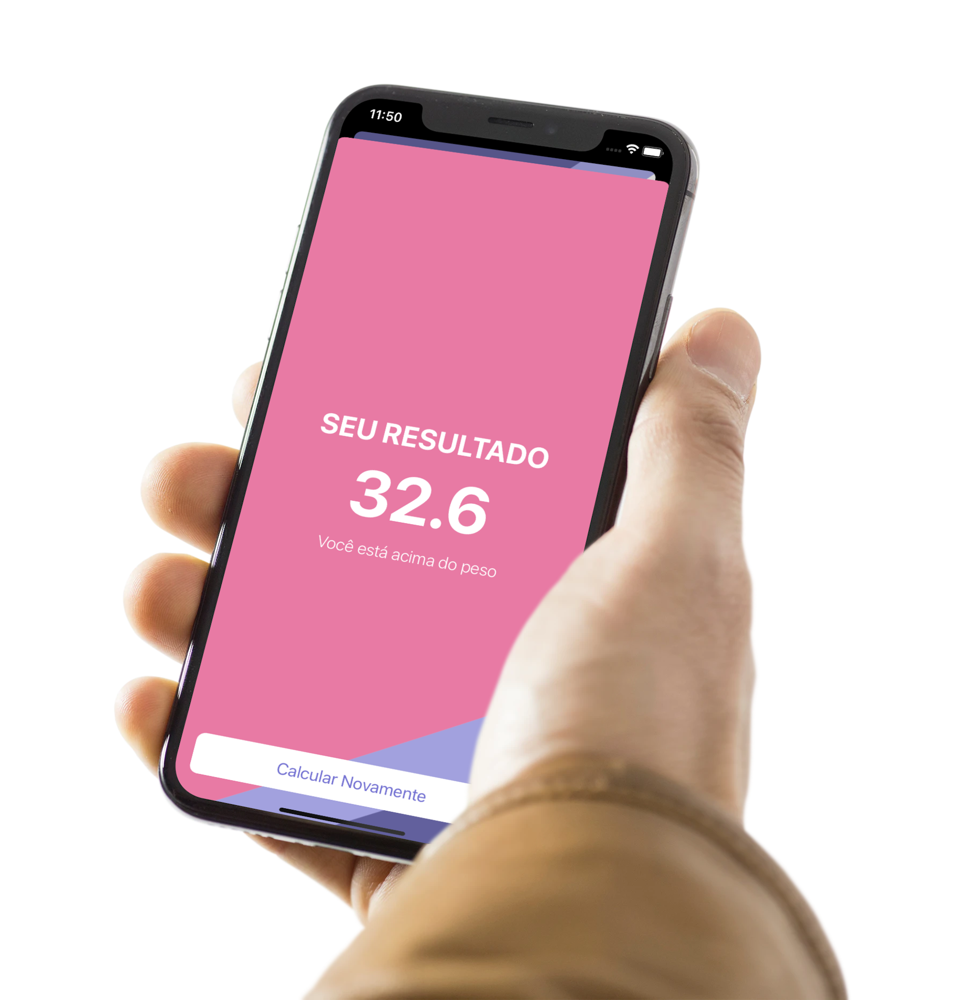

Experience
Volkswagen Truck and Bus
•Setting project goals, coming up with plans to meet and implementing IT strategies
•Maintaining project timeframes, budgeting estimates and status reports
•Managing resources for projects, such as computer equipment and employees
•Coordinating project team members and developing schedules and individual responsibilities
•Implementing IT strategies that deliver projects on schedule and within budget
•Using project management tools to track project performance and schedule adherence
•Conducting risk assessments for projects
•Organizing meetings to discuss project goals and progress
IU Education
• Assists school administrators for the purpose of supporting them in meeting the needs of English Language Learners,
Conducts meetings with staff for the purpose of coordinating districtwide activities including disseminating and
receiving information, planning and implementing activities/events, addressing operational issues, etc.
• Coordinates a variety of administrative activities (e.g. screening, interviewing, recommending, and/or orienting
program staff; etc.) for the purpose of ensuring a positive learning environment and the efficient use of resources
within the specified program area.
• Coordinates language proficiency testing for the purpose of identifying students that qualify for the TOEFL test.
• Participate in meetings, workshops, trainings, and seminars (e.g. site management team, specialized staff, district
curriculum, etc.) for the purpose of conveying and/or gathering information required to perform functions.
• Prepares a variety of reports and written materials (e.g. NewStep Methodology, benchmark objectives, supply orders,
equipment inventory, etc.) for the purpose of documenting activities and ensuring compliance with established guidelines.
Info NET Solutions
Design and build applications for the iOS platform. Ensure the performance, quality, and responsiveness of applications. Collaborate with the team to define, design, and ship new features. Identify and correct bottlenecks and fix bugs.
Centro Venezolano Americano (CVA) (Caracas Venezuela)
On a day-to-day basis at CVA, I was responsible for designing, coding, and modifying websites, from layout to function and according to the client's specifications. Strive to create visually appealing sites that feature user-friendly design and clear navigation.
Toussaint L. HAITI International Airport / Atalou micro system
installing and configuring computer networks and systems. identifying and solving any problems that arise with computer networks and systems. consulting with clients to specify system requirements and design solutions. budgeting for equipment and assembly costs. assembling new systems.
Education
University Anhembi Morumbi
Campus Vila Olimpia
Project Management Institute
São Paulo - Moema
London App Brewery
Educational institution in London, England
Academind
Online Education
London App Brewery
Educational institution in London, England
Skills
English - French - Spanish - Creole - Portuguese
- Mobile-First, Responsive Design
- Cross Browser Testing & Debugging
- Networking, JSON Parsing, APIs and Core Location
- Agile Development & Scrum
- Decent knowledge MVC, MVVM Architectures
- FrameWorks: Cocoa Touch , Git, Github and Version Control
- Firebase Cloud Firestore, TableViews and Cocoapod Dependencies
Projects & Achivements
This BMI (Body Mass Index calculator) Project is based on the user’s weight and height and the formula is BMI = kg/m2 where kg is a person’s weight in kilograms and m2 is their height in meters squared. it will calculate their body mass and give a piece of health advice depending on whether if they are overweight or not.
A BMI of 25.0 or more is overweight, while the healthy range is 18.5 to 24.9. BMI applies to most adults 18-65 years.

 







Certifications
- Cambridge Certification Authority : Swift Level 1 (Swift syntax 5.0)
- Cambridge Certification Authority : Swift Level 2
- London App brewery : iOS App Development
- Udemy : iOS 14 & SwiftUI App Development bootcamp
- Udacity : UX Design for Mobile Developers